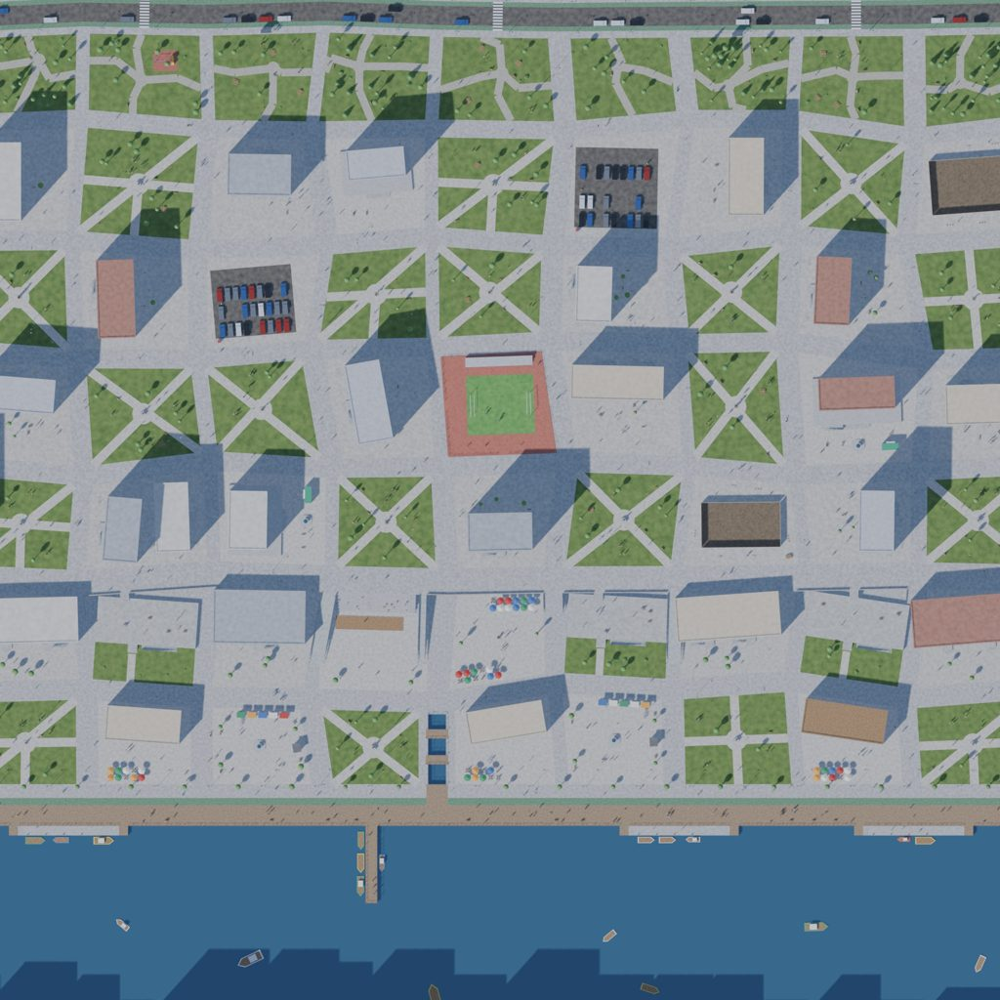
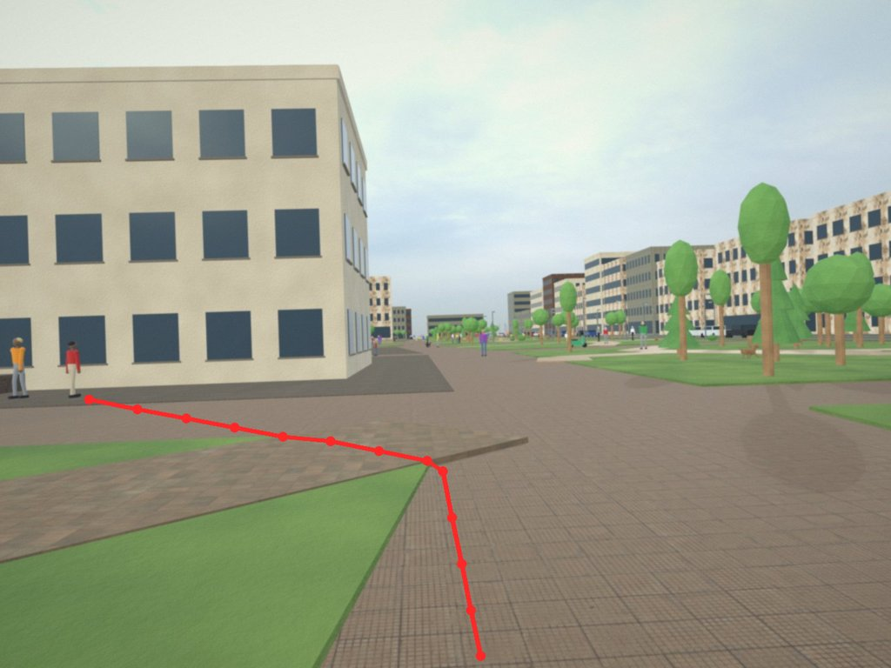

Tracely
A vision-language model that looks at a street photo and draws where a person would walk, trained only on synthetic scenes.
Try it
Upload a first-person street photo, write an instruction, and Tracely draws the walking path. The model runs on a cloud GPU that starts on demand: if nobody has used it in the last few minutes, the first request takes 3-4 minutes while the model loads; after that each request takes about 15 seconds. The demo is limited to 100 requests a day.
The idea
NaviTrace asks a model to turn an instruction such as "Go to the bench on the left" into a path through a real photo, scored against a path drawn by a human expert. Models are good at describing the scene but poor at this: the best published model scores about 35 out of 100, a human expert 75.
Instead of annotating photographs by hand, this project built three towns in Blender with procedural scripts: a streets town, an old town on two levels with people and cafes, and a university campus above a lake. In a 3D scene the walkable surfaces, obstacles and people are known, so the correct path is computed by a route planner and projected into each rendered image exactly. 5,373 cameras gave 10,220 samples with no manual labels.


Results
Qwen3-VL-8B was fine-tuned with LoRA on the synthetic data in three rounds, one per world. Scores are on the 500 Human scenarios of the NaviTrace validation split with the official scoring code: 0 means walking straight ahead, 100 means matching the expert.
| Category | Untrained | World 1 | Worlds 1+2 | Tracely (1+2+3) |
|---|---|---|---|---|
| Overall | −28.3 | 26.0 | 28.3 | 36.9 |
| Dynamic Obstacle | −25.0 | 31.2 | 41.4 | 50.5 |
| Stationary Obstacle | −23.7 | 28.6 | 32.1 | 41.1 |
| Semantic Terrain | −24.0 | 26.3 | 26.8 | 39.7 |
| Geometric Terrain | −27.8 | 25.1 | 26.9 | 36.1 |
| Accessibility | −34.1 | 24.4 | 25.7 | 32.8 |
| Visibility | −27.6 | 24.1 | 24.8 | 30.3 |
| Social Norms | −59.8 | 10.5 | 15.7 | 24.1 |
For comparison, the Human-only means of published models on the NaviTrace leaderboard: human expert 75.5, Gemini 2.5 Pro 35.4, GPT-5 21.1, Qwen3-VL-235B Thinking 19.3, o3 17.8. Tracely is measured on the validation split and has not been submitted to the leaderboard, so the comparison is indicative.

What was learned
Synthetic data transfers to real photographs: a model that never saw a real walking path gained 65 points. Each world helped most in the situations it was built to add: people and queues raised Dynamic Obstacle and Social Norms; lawns, water, bike lanes and stairs raised Semantic and Geometric Terrain. And variety beat volume: the third world, with new zones and a photographic look, gave almost four times the gain of the second.